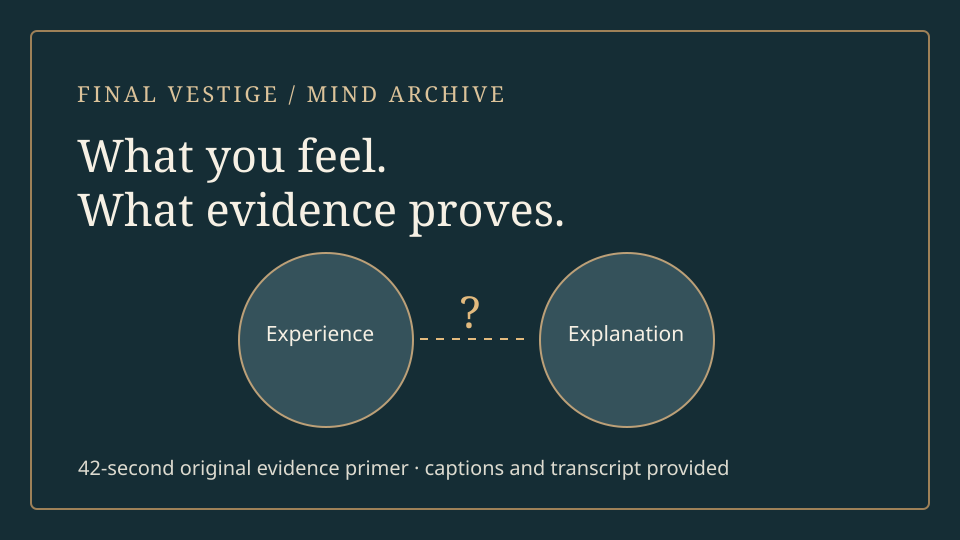

Final Vestige Studios / Tools Under Review / Unpublished independent guide
Before you buy twelve minutes of quiet.
A short audio session may fit a crowded day. But the length of a recording is one fact; what it reliably does to your attention, health or brain is a different question. Here is a buyer's way to keep the two apart.
Independent editorial buyer guide · No product tested by Final Vestige · No merchant link is active · Published only after separate approval
A demonstration of a mind that fills the gaps
Researchers once synchronized brushstrokes on a real hand concealed from view with strokes on a visible rubber hand. Some participants reported a sense that the visible artificial hand belonged to them. The classic Botvinick–Cohen report appeared in 1998; subsequent work separated subjective ownership from a measured shift in hand-location estimates. The striking experience did not prove an unrestricted power to change cognition. It showed how carefully arranged inputs can alter perception in a laboratory.
The same discipline is useful when evaluating an audio offer. A powerful demonstration in one field is not a clinical test of a product in another. The [unpublished] Final Vestige investigation The Hand You Were Certain Was Yours explains the distinction in detail. Source: Botvinick & Cohen (1998), DOI 10.1038/35784; Rohde et al. (2011), DOI 10.1371/journal.pone.0021659.
Try a useful free baseline first
Set a 12-minute timer. Choose one task. Put one source of distraction out of reach, work until the timer ends, and note how often you wanted to switch tasks. Repeat on another day. This is a personal observation exercise, not a clinical experiment; changes in what you notice do not prove a treatment effect.
Read the free Seven Day Focus Fieldbook
This is Final Vestige's existing 52-page free guide and single Jetpack/Dispatch route. It is not a paid product, and no second email list is created here. You can continue reading without subscribing.
Variant B only / optional short video concept
A 42-second evidence primer (original storyboard)

A locally buildable, silent 42-second preview has a source-controlled encoder recipe and companion captions. The downloadable proof file is NOT embedded in this GitHub source, so this page does not falsely offer a playable video. Final delivery requires approved media upload, proper poster, caption track, transcript and real-browser QA. No autoplay or forced playback.
Read the six-scene transcript and filming plan
00:00–00:07: “Your eyes see one hand. Your skin feels another.” Visual: two original outlined hands, with no actual participant portrayed.
00:07–00:14: “Match the timing, and what belongs to you can feel uncertain.” Visual: two synchronized brushstroke marks.
00:14–00:21: “A reported feeling is real evidence of the report—not proof of every proposed cause.” Visual: report and cause shown in separate frames.
00:21–00:28: “That is why we separate a product's format from its promises.” Visual: label “12-minute audio format” opposite label “benefit claim”.
00:28–00:35: “Try a free twelve-minute routine, then check the source.” Visual: modest clock and paper notes.
00:35–00:42: “Choose with the evidence in view.” Visual: Final Vestige / Mind & Perception Archive title card. No price, urgency or spoken sales CTA.
What Zen12 actually offers
What the seller describes
The official Zen12 catalog describes a meditation-audio program built around twelve-minute sessions, twelve levels, and four listening styles. Its ordinary catalog has package choices. A separate promotional sales page describes a full-course offer with 48 MP3 files, extras and a promotional checkout context.
Seller primary sources: zen12.com (catalog), zen12.com/about (program), zen12.com/secret/ (distinct promotional offer). Text citations only; these are not affiliate or purchase links.
What has not been established
The seller promotes an equivalence between a twelve-minute session and an hour of advanced meditation, along with broader claims about stress, focus and health. Final Vestige has not verified a product-specific controlled study establishing those benefits. A 2023 review of fourteen binaural-beat EEG studies reported inconsistent entrainment findings; it did not evaluate Zen12 itself.
Research: Ingendoh et al., 2023, PMID 37205669. Neither support nor disproof of the complete Zen12 course.
The fit test: six questions before paying
- Are you buying a schedule or a result? A short recording can be convenient; convenience does not certify mental or medical improvement.
- Which exact package? The ordinary catalog and the separate promotional page are not necessarily the same bundle or checkout.
- What is the current total? Confirm the price, tax, currency, payment method and any renewal directly in the specific final checkout; do not rely on a banner or countdown.
- What is delivered? Verify the number, format and length of files and whether support or bonuses are included for that exact SKU.
- How do returns work? Read the exact checkout's refund/return policy and the practical means to request support before purchasing.
- What will you compare it against? Try a free, short routine and judge the product as an optional aid to routine rather than a substitute for professional care.
It is a poor fit for someone looking for a validated cure, guaranteed cognitive enhancement, effortless wealth, or a substitute for medical or psychological treatment. It may be worth independently considering only for someone who specifically wants the recorded format and accepts the uncertainty.
Similar products are different promises
Hypnosis Live / Total Focus is offered as a 33-minute, 47 MB hypnosis recording on its seller page. Brainwave Shots / Focus Shot describes fifteen- and thirty-minute audio versions and optional brainwave-only tracks. Those are different formats from Zen12's twelve-level course. Their public efficacy slogans are seller assertions, not independent findings or transferable proof. Their current prices and returns must be checked for the exact authorized destination.
Seller sources: hypnosislive.com/mental-skills/total-focus; brainwaveshots.com/focus-shot. No external commercial link is active in this draft.
Commercial placement / inactive until agreement verified
Considering Zen12 after reviewing the evidence?
The relevant offer is the course's twelve-minute guided audio format—not a demonstrated shortcut to superior cognition. An authorized purchase route will be considered only after the named Final Vestige partner account, exact landing page, channel permissions, terms, checkout and customer remedies are verified. This is an editorial preview; no transaction is available here.
Affiliate disclosure: If you purchase through a future approved link on this page, Final Vestige may earn a commission at no additional cost to you. There is no active affiliate link in this draft.
No redirect, click tracker or purchase intent is implied by the disabled control. Any future real affiliate_click would be tracked separately from merchant-confirmed paid conversions under approved privacy rules.
Evidence and transparency
Original laboratory report: DOI 10.1038/35784. Measurement caveat: DOI 10.1371/journal.pone.0021659. Expectancy dispute: DOI 10.1525/collabra.325; PMID 35782045. Binaural-beat review: PMID 37205669. FTC endorsement FAQ: ftc.gov/business-guidance/resources/ftcs-endorsement-guides-what-people-are-asking. FTC health guidance: ftc.gov/business-guidance/resources/health-products-compliance-guidance.
Our editorial standards separate primary observations from interpretations and commercial interests. An affiliate relationship cannot determine a scientific conclusion. Our Puységur archive shows the same rule applied to extraordinary historical testimony.